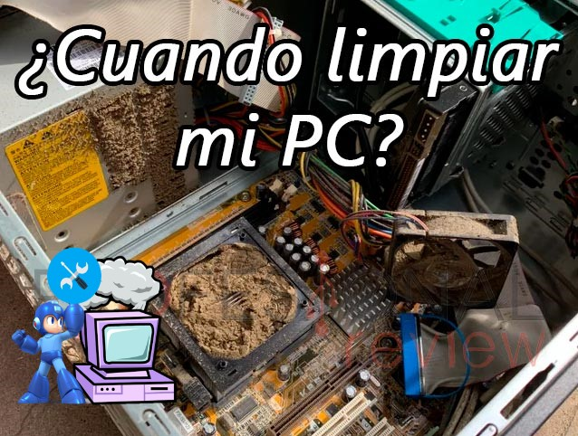

Consejos para buen rendimiento de mi PC

Es necesario una limpieza profunda habitual de la PC constantemente, lo cual se procura mensualmente aplicar con un secador practico o un pincel de cerdas finas repasarle en los componentes del hardware para evitar el aglomeramiento de polvo que ingresa por la ventilación del gabinete, así también se evita encostrarse dicha mugre.